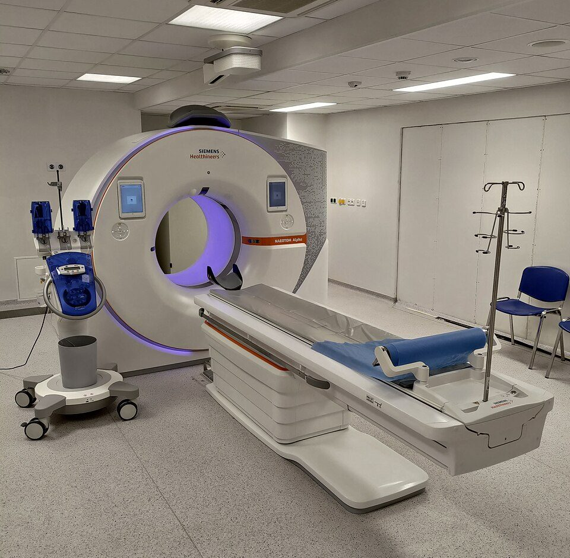

What it is
A computed tomography (CT, or CAT) head scan uses X-rays and a computer to obtain cross-sectional images of the brain and skull. It was invented by the British engineer Godfrey Hounsfield, and the first patient, a woman with a brain tumour, was scanned in London in 1971. Hounsfield and Allan Cormack received the Nobel Prize in Medicine in 1979. It revolutionised neurology: for the first time, the inside of a living person's brain could be seen without surgery.
What it is used for
Its great advantages are speed (a few seconds) and availability in every hospital at any hour. That is why it is the test of choice in emergencies:
- Stroke: distinguishes an infarct from a haemorrhage within minutes, essential before thrombolysis. See stroke code.
- Head injuries: fractures, haematomas and contusions.
- Subarachnoid haemorrhage: within the first 6 hours it detects almost 100% of cases.
- Hydrocephalus, large tumours, abscesses.
- Before a lumbar puncture in some patients.
- Examining the bones of the skull, the sinuses and the ear.
On the image, fresh blood looks white (hyperdense), bone white, cerebrospinal fluid black and an infarct, after a few hours, dark.
Variants
- CT angiography: with iodine contrast injected into a vein, it shows the arteries of the neck and brain. It detects blockages of large arteries (candidates for thrombectomy), aneurysms, malformations and dissections. CT venography shows the veins (venous thrombosis).
- CT perfusion: measures blood flow in each area of the brain and distinguishes tissue already lost from tissue that can still be saved. It allows strokes to be treated outside the usual time windows.
Limitations
- It is less detailed than MRI for looking at brain tissue: it may be normal in the first hours of an infarct, and it shows the brainstem, cerebellum, multiple sclerosis lesions or epilepsy poorly.
- It uses ionising radiation. A CT head scan is roughly equivalent to 8 months to a year of natural background radiation. That is why repeating it unnecessarily is avoided, especially in children and pregnant women.
- Iodine contrast can cause allergy (rare) and affect the kidneys in people with kidney failure.
How it is done
The patient lies on a couch that moves into a ring. It takes a few minutes and does not hurt. You need to keep still. If contrast is given, you feel warm for a few seconds.
When it is not needed
For typical migraine headache, dizziness without other symptoms or minor knocks to the head without warning signs, a CT scan is usually not necessary. Guidelines use clinical rules to decide who needs one.
Sources
- Hounsfield GN. Computerized transverse axial scanning (tomography). Br J Radiol. 1973;46:1016-22.
- Powers WJ, et al. Guidelines for the early management of patients with acute ischemic stroke: 2019 update. Stroke. 2019;50:e344-e418.
- Perry JJ, et al. Sensitivity of computed tomography performed within six hours of onset of headache for diagnosis of subarachnoid haemorrhage. BMJ. 2011;343:d4277.
- RadiologyInfo.org. Head CT.